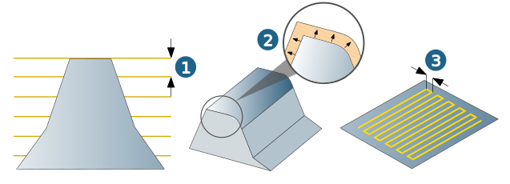

Parameters
Machining area
The area to be machined (Top and Bottom) is usually recognized automatically. However, if the machining area is to be manually limited, use the Manual top / Manual bottom functions.
For general information on top and bottom, see the next section.
Machining area
The vertical machining area is defined by the values for Top and Bottom of the component.
Top (3): maximum Z value in the current job.
Bottom (4): minimum Z value in the current job.
The area to be machined is normally recognized automatically. However, if the machining area is to be manually limited in the Z direction, use the Manual top or Manual bottom functions.
|
Specify the values for top and bottom directly on the model by clicking the icon. Manually defined values are not associative. If changes are made to the model geometry, the values will not automatically change as well. |
(1) Clearance plane, (2) Clearance distance
 |
Flat areas / Steep areas
Max. cutting depth (1): Value for the maximum area to be machined in XY direction (flat areas) or Z direction (steep areas). You can adapt the machining depth to the size of the tool used. Advantage: Avoids breakages caused by the tool engaging too deep.
Min. rest material (2), Tool (3), Reference tool (4)
 |
For the Cavities and open areas, Only cavities and Complete machining strategies, the Max. cutting depth parameter is not available as the following value is the default setting: 2x diameter of the machining tool.
Perpendicular restmaterial areas: Search strategy for finding steep surface areas that run at a 90° angle to the tool axis.
For general information on the infeed, see the next section.
Infeed / allowance
Vertical stepdown (1): The vertical stepdown determines the number of machining planes.
Allowance (2): remaining material on the workpiece. Calculated in direction of the surface normals. Added to the Clearance parameter during machining (see section Check tool).
Warning
For the 3D Arbitrary Stock Roughing cycle, the distance between the tool and the stock and model is specified by the defined clearance only.
If the XY allowance is negative, end mills are not allowed.
If a bullnose end mill is used, the negative XY allowance must be smaller or equal to the tool radius minus the corner radius.
Example: tool radius (5 mm) - corner radius (4 mm) = 1 mm.
The stock allowance only applies for surfaces. For areas where there are no surfaces present there will be no stock allowance calculated.
Z constant machining: In the last machining level, the allowance only applies in X and Y direction, not in Z direction. The specification of negative stock allowances is possible as long as the sum of (negative) stock allowance and tool corner radius does not become negative. When specifying negative stock allowances, surface gaps should not exceed the following maximum values (otherwise, risk of ‘nose-diving’): 2 x (tool radius + negative allowance).
Additional allowance XY: Additional horizontal stock allowance enables machining with different stock allowances for the bottom and side walls of the machining area.
Limitations: If the sum of the allowances is negative, the total amount must be less than the tool radius - machining tolerance.
Example: tool radius = 5.00 mm, machining tolerance = 0.01 mm, allowance = -3.0 mm.
Additional allowance XY must be greater than -1.99 mm, e.g. - 1.98, for |-3.00mm +(-1.98mm)| < 5.00mm -0.01mm.
The polyhedron offset is also taken into account as the stock allowance (see dialog Milling area > Definition). If several values are defined here, only the smallest value is taken into account.
Horizontal stepover (3): The infeed in the machining plane (XY plane) is specified as length dimension or as a factor of the tool diameter: J:ae/T:Dia (= infeed width/tool diameter). Reference to different definitions is given at the appropriate places.
|  |
Retract mode
The retract mode defines the Z level where the system executes horizontal infeed movements. The mode set is valid for all machining directions (incl. approach, retract and return movement macros) and for the profiles machined with them. Exception: Machining in zigzag mode without return macro.
Clearance distance (1): all retract and infeed movements are executed via the clearance distance. Starting and end positions of an infeed movement in rapid are displaced in Z direction in order to guarantee a collision-free linear infeed movement. The clearance distance is added to these positions.
Clearance plane (2): all retract and infeed movements are executed via the clearance plane.
 |
Safety
Clearance plane and clearance distance apply in the direction of the Z axis of the current frame.
 |
Clearance plane (1): Plane for rapid tool movements. Specification in absolute dimensions Define the clearance plane by right-clicking on the icon. Select a point and confirm the selection. |
Warning
Traversing movements on the clearance plane are not checked with regard to collisions. Therefore, this plane must be placed at a sufficient distance above the surface of the workpiece.
Clearance distance (2): Distance to the current toolpath to be milled. Above the clearance distance, infeed takes place as rapid in the Z direction (A); below the clearance distance infeed takes place at the Z feedrate (B).
(3) Top, (4) Bottom
|